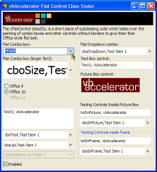

VB5 Office Combo As DLL (35K)
VB5 Office Combo As DLL (35K)
 VB5 Office Combo Demonstration (30K)
VB5 Office Combo Demonstration (30K)
 VB6 Office Combo As DLL (32K)
VB6 Office Combo As DLL (32K)
 VB6 Office Combo Demonstration (28K)
VB6 Office Combo Demonstration (28K)
 29 Sep 2003
29 Sep 2003
Provided Office 10 style drawing mode. Office 11 style will be made availble shortly!
Added code to ensure that combo boxes are still drawn correctly when a XP Visual Styles are applied using a Manifest with the application.
Provided support for right-to-left Combo boxes.
Refactored all the drawing code to enable multiple drawing modes more easily.
Added VB6 version.
 Subclassing Without The Crashes
Subclassing Without The Crashes

Office/VS.NET Style Flat Combo Boxes
A drop-in class which makes all types of combo boxes and text boxes draw flat.
This project provides a class which subclasses Combo Boxes and other controls so that they draw in a flat style and highlight when the mouse is over or they are in focus. The class works on all types of Combo and ComboBoxEx controls as well as on TextBoxes and PictureBoxes. By default, the Office 10/VS.NET drawing style is used, but there is also an Office 9 style.
How It Works
Combo boxes normally draw their own sunken border and drop-down button. The code takes the sneaky approach of intercepting the painting messages and drawing over the default borders and the drop-down button with nice new ones. To do this means we have to subclass the following messages:
- WM_PAINT - Windows controls (should) do all of their painting during this event. By performing additional painting tasks after Windows has completed we can overdraw Window's version. (Note that some controls, such as ScrollBars and TextBoxes paint at many other times and hence are harder to customise than the Combo Box).
- WM_COMMAND - The drop-down button needs to be repainted depending on the drop-down state: combo boxes notify their parent through this event whenever the drop-down state changes.
- WM_SETFOCUS - Occurs when the control gets the focus. In Office the focused control always has a flat border when it is in focus regardless of whether the mouse is over it or not.
- WM_KILLFOCUS - Occurs when the control loses focus, and is used to reset the border when focus is removed.
- WM_MOUSEMOVE - So the control can be highlighted when the mouse is over. The control then sets a timer to check if the mouse has moved off the control again so the highlight can be removed when it is no longer needed.
On receiving one of these messages, the code gets the Combo box's hDC and then paints over the controls borders so that they appear either flat (when the mouse is not over) or highlighted when the mouse is over. Smart!
Removing XP Visual Styles
This code does not agree with the extra drawing that's performed when XP Visual Styles are applied. To prevent this, the code removes XP Visual Styles from the control it is attached to using the SetWindowTheme call:
Private Declare Function SetWindowTheme Lib "uxtheme.dll" ( _
ByVal hWnd As Long,
ByVal pszSubAppName As Long,
ByVal pszSubIdList As Long) As Long
Private Sub RemoveTheme(ByVal hWnd As Long)
' On error means the code is skipped on pre-XP OS
On Error Resume Next
Dim lR As Long
lR = SetWindowTheme(hWnd, StrPtr(" "), StrPtr(" "))
On Error GoTo 0
End Sub
Subclassing other controls cannot be achieved by drawing over the existing border. However, you can draw a border on the control's container (thanks to Peter Siebler for pointing this out). So if you set the border-style of the control to None, the DLL can achieve the mouse-over highlighting effect by drawing on the control's container.
How to Make Your Combo Boxes and Controls Flat
This is the easy bit!
There are two versions of this code. One is a small private class module which you can compile directly into your executable. The other is exactly the same class built into an ActiveX DLL. The reason for providing the DLL is to make it easier to debug code using this class. Because the class has to subclass the WM_PAINT message, when you break in VB's IDE many events can fire which make it difficult to debug (and, in the worst case, cause VB to crash, particularly under older Windows versions). By using the DLL, you don't need to worry about these problems because all the subclassing code is isolated from your project. (And since the DLL is binary compatible, and supported, you can ship it with your project as well).
Start a new project, and add a combo box to the form. If you are using the DLL, add a reference to it (it will appear as "vbAccelerator Flat Combo Box Extender" in the references list. Otherwise, add the cFlatControl.cls file to your project.
Then you only need two lines of code for each control you want to make flat:
' In the declarations section of the form:
Private m_c As New cFlatControl
Private Sub Form_Load()
' Attach your combo box to the flat combo box
' drawing routines:
m_c.Attach cboThis
End Sub
Erm, and that's it. If you want to give multiple controls in a form a flat style, a simple way to do is to declare an array of cFlatControl classes and enumerate through the controls in the form, setting the style:
' In the declarations section of the form:
Private m_c() As cFlatControl
Private m_iCount As Long
Private Sub Form_Load()
Dim ctl As Control
For Each ctl In Controls
If TypeName(ctl) = "ComboBox" Then
m_iCount = m_iCount + 1
ReDim Preserve m_cFlatten(1 To m_iCount) As cFlatControl
Set m_cFlatten(m_iCount) = New cFlatControl
m_cFlatten(m_iCount).Attach ctl
End If
Next
End Sub
If you want the most accurate Office emulation, you should also modify the background colour of combo boxes to vbButtonFace when the control is disabled. A routine like this can be used whenever you disable controls:
Public Sub EnableWithColour(ctl As Control, ByVal state As Boolean) If Not(state) Then ctl.BackColor = vbButtonFace ctl.Enabled = state If (state) Then ctl.BackColor = vbWindowBackground End Sub
Credits
Many thanks to Kirk Stowell for writing and posting the original MFC sample which provided the ideas that brought this code to life. The site this was sourced from is no longer around but I believe he is associated with Code Jock software.
Conclusion
This article provides an easy to use class that converts combo boxes and other controls to a flat, Office style.